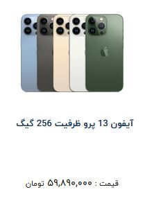

iphone | آیفون
آیفون ها، سری موبایل های برند اپل میباشند که از ژانویه 2007 نوسط مدیر وقت اپل، استیو جابز معرفی شدند. موبایل های ایفون، همواره به عنوان پرطرفدارترین سری موبابل ها در جهان به حساب می آیند و هر سری جدید از موبایل ایفون، که در شهریور ماه رونمایی میشوند، دارای نوآوری هایی شگفت انگیز میباشند. طبق سیاست های جدید اپل، هر سری جدید از موبایل آیفون، در 4 مدل معمولی، اولترا، پرو و پرومکس رونمایی میشوند که با دارا بودن قابلیت های متنوع و قیمت های مناسب، طیف گسترده ای از خریداران را در جهان پوشش میدهند.
iPhone 12 | ایفون 12
گوشی موبایل «iPhone 12 – ایفون 12» پرچمدار جدید شرکت اپل است که با
چند ویژگی جدید و دوربین دوگانه روانه بازار شده است. اپل برای ویژگیها
و طراحی کلی این گوشی از همان فرمول چند سال اخیرش استفاده کرده است.
نمایشگر آیفون 12 به پنل Super Retina مجهز شده است تا تصاویر بسیار
مطلوبی را به کاربر عرضه کند. این نمایشگر رزولوشن بسیار بالایی دارد؛
بهطوریکه در اندازهی 6.1 اینچیاش، حدود 460 پیکسل را در هر اینچ جا
داده است که دقیقاً با تراکم پیکسلی iPhone XS برابر است.

iphone 13 pro max | آیفون ۱۳ پرومکس
آیفون 13 پرومکس، پرچم دار جدید آیفون و بزرگترین نسخه از موبایل های
اپل، با صفحه نمایشی 6.7 اینچی میباشد که در تابستان 2021 معرفی شد. این
غول برند اپل، برای تحت سطله در آوردن بازار موبایل های پرچمدار معرفی
شده است و دارای قابلیت های سخت افزاری قدرتمند و بی نظیری میباشد.

iPhone 13 Pro | ایفون 13 پرو
آیفون 13 پرو، محصولی باشکوه تر از مدل ایفون 13 معمولی میباشد که با دارا بودن طراحی بی نظیر و 3 دوربین فوق العاده با کیفیت، به عنوان جانشینی باشکوه برای ایفون 12 پرو معرفی شده است. ایفون 13 پرو دارای صفحه نمایشی 6.1 اینچی مشابه نمونه معمولی میباشد اما در بحث سخت افزاری، علاوه بر باتری قوی تر، عملکرد و سرعت به مراتب بالاتری نسبت به نمونه معمولی خود دارد. 
iPhone 15 | آیفون 15
اپل هر سال در اواخر شهریور تقریبا تمامی اخبار دنیای تکنولوژی را به خود اختصاص میدهد و طبق انتظارها این اخبار امسال به آیفون 15 رسیده و به محض رونمایی توجه همه دنیا به سمت این محصول جدید جلب شده است. آیفون 15 همانطور که پیشبینی میشد، تغییرات خیلی زیاد و عجیبی نداشت، اما بهبود و ارتقاهای مورد انتظار ما در آن مشاهده میشود. این مدل در کنار سه مدل دیگر که شامل آیفون 15 پلاس، آیفون 15 پرو و آیفون 15 پرو مکس هستند، رونمایی شدند.